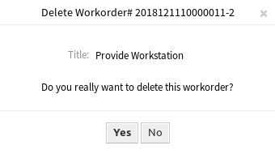
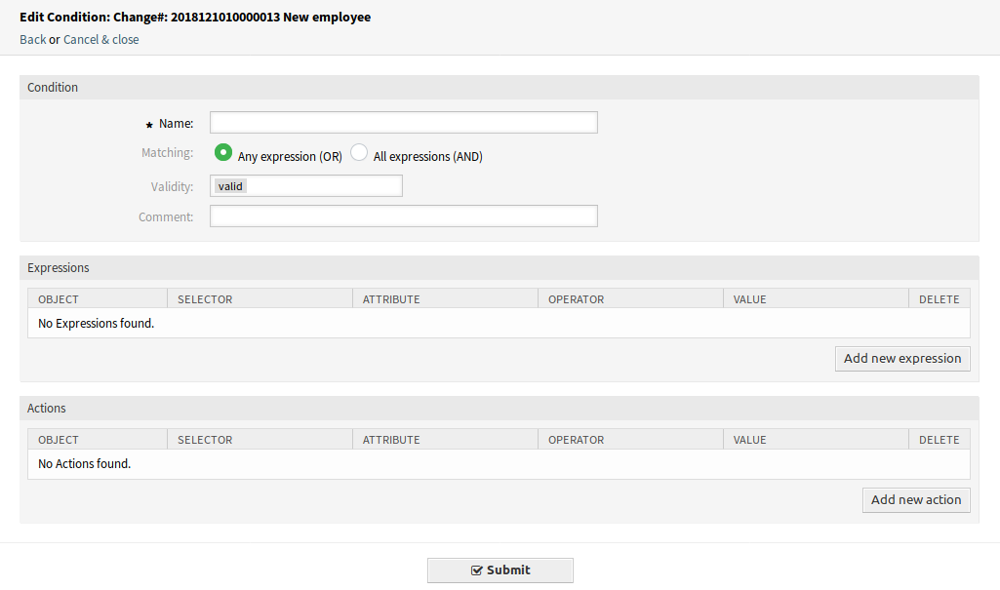

Übersicht¶
Diese Ansicht gibt eine Übersicht über Changes.
ITSM Changes - Übersicht
Changes können gefiltert werden, indem man auf einen Change-Namen in der Kopfzeile des Übersichts-Widgets klickt. Es gibt eine Option Alle, um alle Changes zu sehen. Die Zahlen hinter den Statusnamen geben an, wie viele Changes in jedem Status vorgenommen wurden.
Siehe auch
Siehe Einstellung ITSMChange::Frontend::AgentITSMChange###Filter::ChangeStates, um die Arbeitsauftrags-Status zu definieren, die als Filter in der Übersicht verwendet werden.
So begrenzen Sie die Anzahl der angezeigten Changes pro Seite:
- Klicken Sie auf das Zahnradsymbol in der oberen, rechten Ecke des Übersichts-Widget.
- Wählen Sie die maximale angezeigte Anzahl der Changes pro Seite.
- Klicken Sie auf die Schaltfläche Bestätigen.
Die angezeigten Attribute können über die Systemkonfiguration definiert werden. Nicht alle Attribute werden standardmäßig angezeigt. Die möglichen Attribute sind:
ActualEndTime- Datum und Zeit zu der die Umsetzung des Changes abgeschlossen wurde.
ActualStartTime- Datum und Zeit zu der die Umsetzung des Changes begonnen wurde.
Category- Kategorie oder Typ des Change.
ChangeBuilder- Name des Change-Builder.
ChangeManager- Der Name des Change-Manager.
ChangeNumber- Vom System erzeugte Change-Nummer.
ChangeState- Change-Status.
ChangeStateSignal- Indikator für den Change-Status, der als Signalfarbe angezeigt wird.
ChangeTime- Datum und Zeit zu der der Change geändert wurde.
ChangeTitle- Name des Change.
CreateTime- Datum und Zeit zu der der Change erstellt wurde.
DynamicField_ChangeFieldName- Dynamisches Feld, das dem Arbeitsauftrag zugeordnet ist.
Impact- Erwarteter Effekt des Change.
PlannedEndTime- Datum und Uhrzeit des Abschlusses der geplanten Change-Umsetzung.
PlannedStartTime- Datum und Uhrzeit des geplanten Starts der Umsetzung.
Priority- Prioritäts-Stufe des Changes.
RequestedTime- Das vom Kunden gewünschte Umsetzungsdatum.
Services- Services, die vom Change beeinflusst werden.
WorkOrderCount- Anzahl der Arbeitsaufträge, die mit dem Change zusammenhängen.
Siehe auch
Siehe Einstellung ITSMChange::Frontend::AgentITSMChange###ShowColumns, um die angezeigten Attribute zu definieren.
So schauen Sie sich Details eine Change an:
- Klicken Sie in der Liste auf einen Change.

ITSM Change-Detailansicht
Die Change-Detailansicht hat ihr eigenes Menü.
- Zurück
- Dieser Menüeintrag führt zur vorherigen Ansicht zurück.
- Historie
Dieser Menüeintrag öffnet ein neues Fenster mit der Historie des Changes.

ITSM Change - Historie
- Dieser Menüeintrag öffnet eine PDF-Datei mit einer Druckansicht. Sie können diese PDF-Datei speichern oder drucken.
- Bearbeiten
Dieser Menüeintrag öffnet ein neues Fenster zum Bearbeiten des Change.

ITSM Change bearbeiten
- Beteiligte Personen
Verwenden Sie diese Ansicht, um Personen zum Change hinzuzufügen.

Beteiligte Personen
- Change Manager *
Weist einem Agenten für den aktuellen Change die Change-Manager-Privilegien zu.
Bemerkung
Es können nur die Agenten als Change-Manager hinzugefügt werden, die Mitglieder der Gruppe itsm-change-manager sind.
- Change Builder *
Definiert den Bearbeiter und definiert den aktuellen Change. Beim Anlegen eines neuen Change wird automatisch der aktuelle Bearbeiter als Change-Builder eingetragen.
Bemerkung
Es können nur die Agenten als Change-Builder hinzugefügt werden, die Mitglieder der Gruppe itsm-change-builder sind.
- Change Advisory Board
- Definiert eine Gruppe von Personen, zu der Agenten und Kunden gehören können.
- Arbeitsauftrag hinzufügen
Verwenden Sie dieses Fenster, um neue Arbeitsaufträge zum Change hinzuzufügen.

Arbeitsauftrag hinzufügen
Die folgenden Einstellungen sind verfügbar, wenn Sie diese Ressource hinzufügen oder bearbeiten. Die mit Stern gekennzeichneten Felder sind Pflichtfelder.
- Titel *
- Der Name der Ressource. In dieses Feld können beliebige Zeichen eingegeben werden, einschließlich Großbuchstaben und Leerzeichen. Der Name wird in der Übersichtstabelle angezeigt.
- Anweisung *
- Eine längere Beschreibung des Arbeitsauftrags und was zu tun ist.
- Arbeitsauftrags-Typ
- Wählen Sie einen Typ für den Arbeitsauftrag. Die Typen werden in der Klasse
ITSM::ChangeManagement::WorkOrder::Typeim Allgemeiner Katalog definiert. - Geplante Startzeit
- Wählen Sie eine geplante Startzeit für den Arbeitsauftrag.
- Geplante Endzeit
- Wählen Sie eine geplante Endzeit für den Arbeitsauftrag.
- Geplanter Aufwand
- Fügen Sie einen Wert in einer beliebigen Arbeitseinheit hinzu, um den geplanten Aufwand anzugeben.
- Anhang
- Ermöglicht das Anhängen von zugehörigen Dateien und Dokumenten.
Nach dem Hinzufügen einer Arbeitsanweisung, öffnet sich die Arbeitsauftrag-Detailansicht einem neuen Browser-Tab.

Arbeitsauftrag-Detailansicht
Die Arbeitsauftrag-Detailansicht hat ein eigenes Menü.
- Zurück
- Dieser Menüeintrag führt zur vorherigen Ansicht zurück.
- Historie
Dieser Menüeintrag öffnet ein neues Fenster mit der Historie des Arbeitsauftrags.

Arbeitsauftrag - Historie
- Dieser Menüeintrag öffnet eine PDF-Datei mit einer Druckansicht. Sie können diese PDF-Datei speichern oder drucken.
- Bearbeiten
Dieser Menüeintrag öffnet ein neues Fenster zum Bearbeiten des Arbeitsauftrags.

Arbeitsauftrag bearbeiten
- Nachfolgende Arbeitsaufträge entsprechend verschieben
- Wenn dies aktiviert ist, werden die nachfolgenden Arbeitsaufträge entsprechend den in den Feldern Geplante Startzeit und Geplante Endzeit festgelegten Zeiten zeitlich verschoben.
- Arbeitsauftrags-Agent
Verwenden Sie diesen Menüeintrag um einen Agenten zu einem Arbeitsauftrag zuzuordnen.

Arbeitsauftrags-Agent bearbeiten
Bemerkung
Es können nur die Agenten als Arbeitsauftrags-Agent hinzugefügt werden, die Mitglieder der Gruppe itsm-change sind.
- Bericht
Verwenden Sie diesen Menü-Eintrag, um die Fortschritte der Arbeitsweisung zu dokumentieren. Diese Ansicht kann als Protokoll für den Arbeitsauftrag genutzt werden.

Arbeitsauftrags-Bericht
- Bericht *
- Das ist der Text des Berichts. Da es für alle Berichte nur den gleichen Textbereich gibt, wird empfohlen, jedem Eintrag einen Zeitstempel hinzuzufügen.
- Status
Der nächste Status eines Arbeitsauftrags.
Siehe auch
Die möglichen nächsten Status werden in der State Machine für Arbeitsaufträge definiert, aber sie können über Bedingungen gefiltert werden.
- Gebuchte Zeit
- Fügen Sie die abgerechnete Zeit in Zeiteinheiten hinzu.
- Anhang
- Ermöglicht das Anhängen von zugehörigen Dateien und Dokumenten.
- Verknüpfen
Dieser Menüeintrag öffnet die Standardansicht zum Verknüpfen von Objekten. Arbeitsaufträge können mit Services oder Tickets verknüpft werden. Bestehende Verknüpfungen können hier ebenfalls verwaltet werden.
Arbeitsauftrag verknüpfen
- Vorlage
Verwenden Sie diese Ansicht, um den Arbeitsauftrag als Vorlage zu speichern.

Arbeitsauftrag als Vorlage speichern
- Vorlagenname *
- Der Name der Ressource. In dieses Feld können beliebige Zeichen eingegeben werden, einschließlich Großbuchstaben und Leerzeichen. Der Name wird in der Übersichtstabelle angezeigt.
- Kommentar
Fügen Sie dieser Ressource zusätzliche Informationen hinzu.
Bemerkung
Es wird empfohlen, in diesem Feld eine Versionsnummer anzugeben, da es einfacher ist, die richtige Vorlage zu identifizieren.
- Status zurücksetzen
- Alle Status werden zurückgesetzt, wenn Ja ausgewählt wurde.
- Gültigkeit
- Setzt die Gültigkeit dieser Ressource. Jede Ressource kann nur in OTRS verwendet werden, wenn dieses Feld auf gültig gesetzt ist. Wenn Sie dieses Feld auf ungültig oder ungültig-temporär setzen, wird die Nutzung der Ressource deaktiviert.
- Löschen
Verwenden Sie diesen Menüeintrag, um einen Arbeitsauftrag zu löschen.
Arbeitsauftrag löschen
- Dieser Menüeintrag öffnet eine PDF-Datei mit einer Druckansicht. Sie können diese PDF-Datei speichern oder drucken.
- Bearbeiten
Dieser Menüeintrag öffnet ein neues Fenster zum Bearbeiten des Change.
ITSM Change bearbeiten
- Arbeitsauftrag hinzufügen (aus Vorlage)
Verwenden Sie diese Ansicht, um einen Arbeitsauftrag aus einer Vorlage hinzuzufügen.

Arbeitsauftrag aus Vorlage hinzufügen
- Vorlage *
- Wählen Sie aus der Liste der Arbeitsauftrags-Vorlagen eine Vorlage.
- Zeit-Typ
- Wählen Sie im nächsten Feld die Zeitart aus, die Sie neu definieren möchten.
- Neue Zeit
- Geben Sie eine neue Zeit für die oben ausgewählte Zeitart an.
Siehe auch
Vorlagen für Arbeitsvorlagen können über den Menü-Eintrag Vorlagen in der Arbeitsauftrags-Detailansicht erstellt werden.
- Bedingungen
Verwenden Sie diese Ansicht, um neue Bedingungen zum Change hinzuzufügen.

Bedingungen-Übersicht
Bemerkung
Die definierten Bedingungen werden nicht in einer bestimmten Reihenfolge ausgeführt.
So fügen Sie eine neue Bedingung hinzu:
- Klicken Sie auf die Schaltfläche Neue Bedingung hinzufügen.
So bearbeiten Sie eine Bedingung:
- Klicken Sie in der Liste mit den Bedingungen auf eine Bedingung.
So löschen Sie eine Bedingung:
- Klicken Sie in der Liste mit den Bedingungen auf eine Bedingung.
- Klicken Sie im Bestätigungs-Dialog auf die Schaltfläche OK.
Die Ansichten Bedingung hinzufügen und Bedingung bearbeiten bestehen aus drei Widgets.
Bedingung hinzufügen
Im Widget Bedingung:
- Name *
Der Name der Ressource. In dieses Feld können beliebige Zeichen eingegeben werden, einschließlich Großbuchstaben und Leerzeichen. Der Name wird in der Übersichtstabelle angezeigt.
Bemerkung
Bedingungen sind nach Name sortiert. Verwenden sie 100 , 200 , etc. als Präfix, um die Sortierreihenfolge zu setzen. Alle Bedingungen werden unabhängig von ihrer Position bewertet.
- Übereinstimmung
- Übereinstimmungs-Typ von Ausdrücken.
- Gültigkeit
- Setzt die Gültigkeit dieser Ressource. Jede Ressource kann nur in OTRS verwendet werden, wenn dieses Feld auf gültig gesetzt ist. Wenn Sie dieses Feld auf ungültig oder ungültig-temporär setzen, wird die Nutzung der Ressource deaktiviert.
- Kommentar
- Fügen Sie dieser Ressource zusätzliche Informationen hinzu. Es wird empfohlen, dieses Feld als Beschreibung der Ressource zur besseren Übersichtlichkeit immer mit einem vollständigen Satz zu füllen, da der Kommentar auch in der Übersichtstabelle angezeigt wird.
Im Widget Ausdrücke kann der Ausdruck hinzugefügt werden. Die passende Art von Ausdrücken (ODER oder UND) kann oben definiert werden.
Im Widget Aktionen können die Aktionen hinzugefügt werden, die ausgeführt werden, wenn die Ausdrücke erfüllt sind. Der Operator set ermöglicht es, das ausgewählte Attribut auf einen bestimmten Wert zu setzen, wenn die definierte Bedingung erfüllt ist. Andererseits friert der Operator lock das ausgewählte Attribut ein, solange die definierte Bedingung erfüllt ist, d.h. eine manuelle Änderung ist nicht möglich.
Bemerkung
Aktionen werden in der Reihenfolge ausgeführt, wie sie gesetzt wurden.
- Verknüpfen
Dieser Menüeintrag öffnet die Standardansicht zum Verknüpfen von Objekten. Changes können mit anderen Objekten wie FAQ-Artikel, Services, Tickets oder Configuration Items verknüpft werden. Bestehende Verknüpfungen können hier ebenfalls verwaltet werden.

ITSM Change verknüpfen
- Zeitfenster verschieben
Verwenden Sie diese Ansicht, um den geplanten Zeitrahmen für die Implementierung von Changes zu verschieben.

Zeitfenster verschieben
- Zeit-Typ
- Wählen Sie im nächsten Feld die Zeitart aus, die Sie neu definieren möchten.
- Neue Zeit
- Geben Sie eine neue Zeit für die oben ausgewählte Zeitart an.
- Vorlage
Verwenden Sie diese Ansicht, um den Change als Vorlage zu speichern. Neue Changes können aus über den Menü-Eintrag Neu (aus Vorlage) aus Vorlagen erstellt werden.
Change als Vorlage speichern
- Vorlagenname *
- Der Name der Ressource. In dieses Feld können beliebige Zeichen eingegeben werden, einschließlich Großbuchstaben und Leerzeichen. Der Name wird in der Übersichtstabelle angezeigt.
- Kommentar
Fügen Sie dieser Ressource zusätzliche Informationen hinzu.
Bemerkung
Es wird empfohlen, in diesem Feld eine Versionsnummer anzugeben, da es einfacher ist, die richtige Vorlage zu identifizieren.
- Status zurücksetzen
- Alle Status werden zurückgesetzt, wenn Ja ausgewählt wurde.
- Gültigkeit
- Setzt die Gültigkeit dieser Ressource. Jede Ressource kann nur in OTRS verwendet werden, wenn dieses Feld auf gültig gesetzt ist. Wenn Sie dieses Feld auf ungültig oder ungültig-temporär setzen, wird die Nutzung der Ressource deaktiviert.